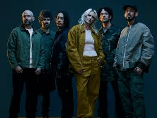

Linkin Park
Cara, se tem uma banda que mexe comigo, com certeza é o Linkin Park. Eu amo as músicas deles, e para mim, é minha banda favorita de rock. O mais louco é que eles parecem ter uma música exata para cada momento da vida, sabe? Parece que eles entram na nossa cabeça e traduzem exatamente o que a gente está sentindo.
Se eu tivesse que escolher minhas músicas favoritas deles, a lista é gigante, mas com certeza estariam no topo Up From The Bottom, The Emptiness Machine e Crawling, que é daquelas que grudam na cabeça e não saem nunca mais. Cada uma tem uma vibe única, uma energia pesada e, ao mesmo tempo, uma vulnerabilidade que me pega demais. É o tipo de som que eu posso ouvir o dia inteiro que nunca enjoo.